Ice Creams of the West Coast
I landed in Boston yesterday around 9 in the morning after getting about four hours of sleep on the flight. My dad picked me up from the airport and then I drove home from his place. The day is a bit of a blur. I did laundry, picked up groceries, and caught up on Game of Thrones. I had dinner with my friends who were watching Aayla (they made delicious vegetarian ramen) and before bringing Aayla home.
But I digress. The purpose of this post is ICE CREAM. As I have alluded to, I made a goal to eat ice cream everyday after I picked up the rental car. My records consist mostly of receipts and photos and favorited locations in Apple Maps (which is not possible to search). In no way did I record which flavors I selected, and I have a terrible memory about these things. I could play detective and figure some out from comparing the pictures to the websites. But often I couldn't.
In the last few days of my trip, the most common question I got asked was "Which was your favorite ice cream?" I didn't have a good answer. Cataloging here, I have jogged my memory a bit, though it's still hard to choose. As an executive summary, I have picked five ice creams that stood out the most to me. They're kind of random, since most of the ice creams were good, but they're five in which I had a uniquely great ice cream experience. For a more in-depth analysis, see my dissertation below.
- San Francisco's Hometown Creamery — San Francisco
- Cowlick's Ice Cream — Fort Bragg
- Salt and Straw — Originally Portland, now all over the place
- Molly Moon's — Seattle
- SomiSomi — San Diego
Monday March 18, 2019. Bi-Rite Creamery. Across from the Market on 18th Street, San Francisco. Among the most famous of Sam Francisco's ice cream shops, it's a spin-off from the grocery store across the street. I didn't go into the grocery store, but I hear it's like Whole Foods but much more expensive. The ice cream location was closed for earthquake-proofing construction and instead there was a food truck outside with pre-scooped ice cream cups. I chose Honey Lavender. It wasn't very good. I should have gone to Garden Creamery a block away instead. Oh well.
Tuesday March 19, 2019. Humphry Slocombe. Embarcadero Ferry Building, San Francisco. I got one scoop of "Secret Breakfast" in a cup. Their signature and most popular flavor, it's bourbon ice cream with cornflakes. Yes, it was good.
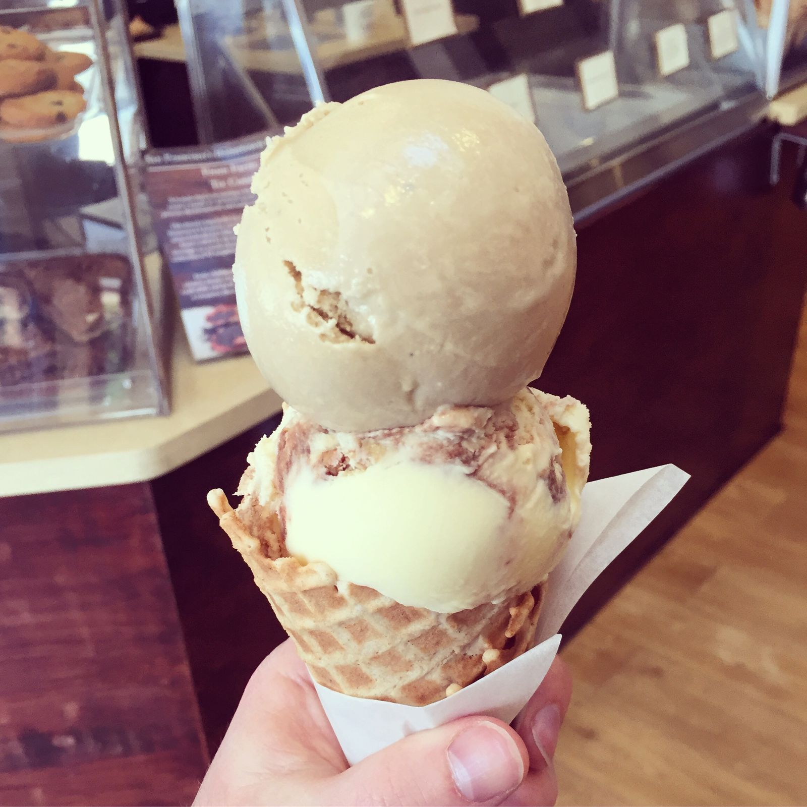
Wednesday March 20, 2019. San Francisco's Hometown Creamery. Inner Sunset District, San Francisco. Because they make all their ice cream in-house, they rotate flavors frequently. I got two scoops of San Francisco Cheesecake and Earl Grey in a waffle cone. Now this was great ice cream. Significantly better than the previous two, I consider this ice creamery to be the start of my spiritual journey across the west coast.
Thursday March 21, 2019. Sweet Scoops Homemade Ice Cream. Sonoma, California. I don't remember what I got here. I just remember that I needed to use the bathroom and they didn't have one.
There was a gap of a few days here when I was in Joshua Tree and failed to get ice cream. Worse mistakes have been made.
Tuesday March 26, 2019. Palm Greens Cafe. Palm Springs, California. This place is actually a vegan friendly restaurant, where I got a deliciously greasy Tempeh Reuben. For dessert, I got a vegan and gluten-free brownie with a scoop of ice cream. Typically I am extremely skeptical of vegan and especially gluten-free desserts. I wouldn't have gotten it had the waitress not highly recommended it as her favorite. She was right. It was so good we got a second.
Wednesday March 27, 2019. Bottega Italiana. La Jolla, San Diego. I have to say, San Diego has a mean gelato game. It being my first gelato of the trip, I went with my personal favorite of stracciatella in a cup. My friends got an affogato.
Thursday March 28, 2019. Hammond's Gourmet Ice Cream. North Park, San Diego. I went here after going to the zoo. I was wearing my sunglasses and had left my regular glasses in the car, so I couldn't see very well when I got inside. I remember a woman in front of me trying to order 6 mini cones to go and the store didn't have any boxes that would hold those cones. I don't remember what I ordered or whether it was any good.

Thursday March 28, 2019. Yes, I got ice cream twice this day. SomiSomi. San Diego. This place serves Ah-Boong, a Korean dessert of soft served ice cream inside a soft fish-shaped taiyaki cake cone. I got matcha and black sesame soft serve swirl with red bean paste inside the cone. It was an excellent treat.
Friday March 29, 2019. Bobboi Natural Gelato. La Jolla, San Diego. My friends said this is a not-to-miss Gelateria, so I got one here despite going for dinner immediately after. My classic stracciatella and strawberry in a cup lived up to expectations. The view of the beach certainly didn't hurt.
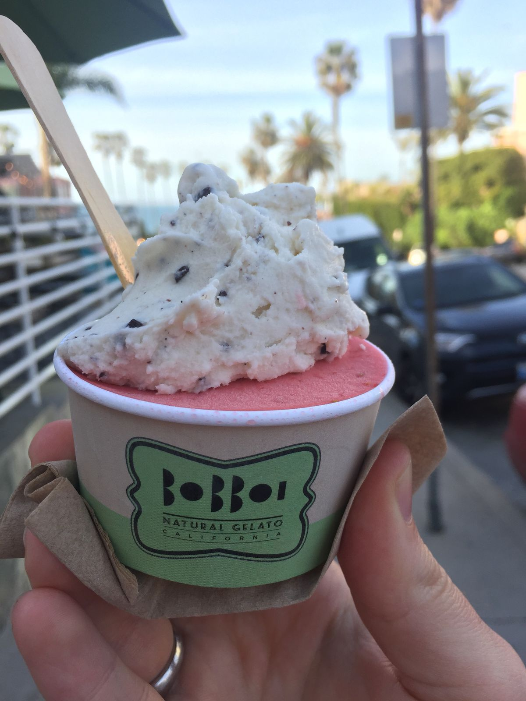
Saturday March 30, 2019. Gelato Paradiso. Coronado Island. After walking along the beach for a few hours, I stopped into this Gelateria for lunch. I don't remember which flavors I chose, but I remember enjoying it in the warm weather. Afterwards I stopped by a Whole Foods for a salad.
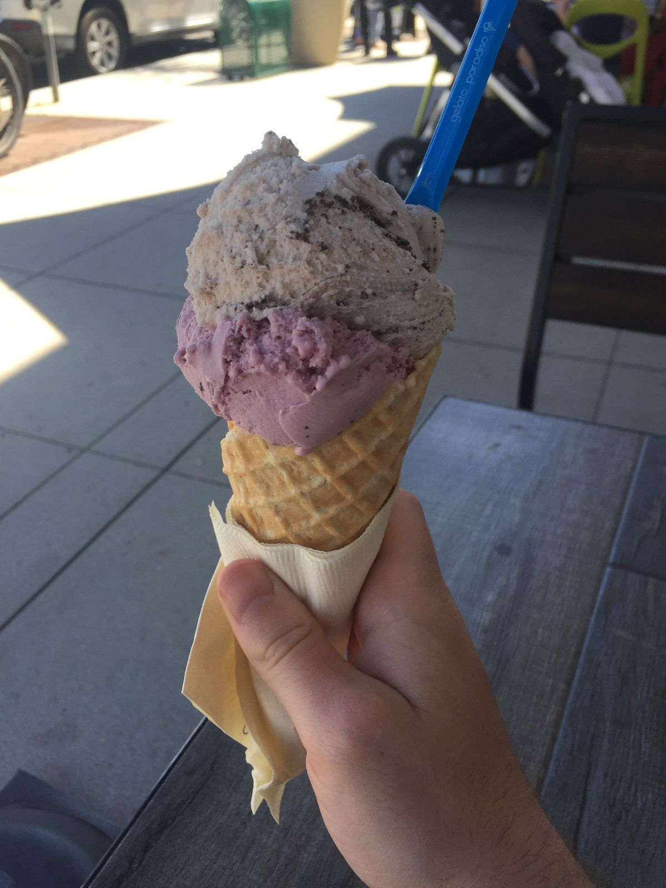
Sunday March 31, 2019. McConnell's Fine Ice Creams. Studio City, Los Angeles. I got two scoops in a cup. Strawberry and some other flavor I don't remember. It was good, though below average for this trip. I should note that I have become excellent at Yelping my way to great ice cream, so my average was in fact quite good.
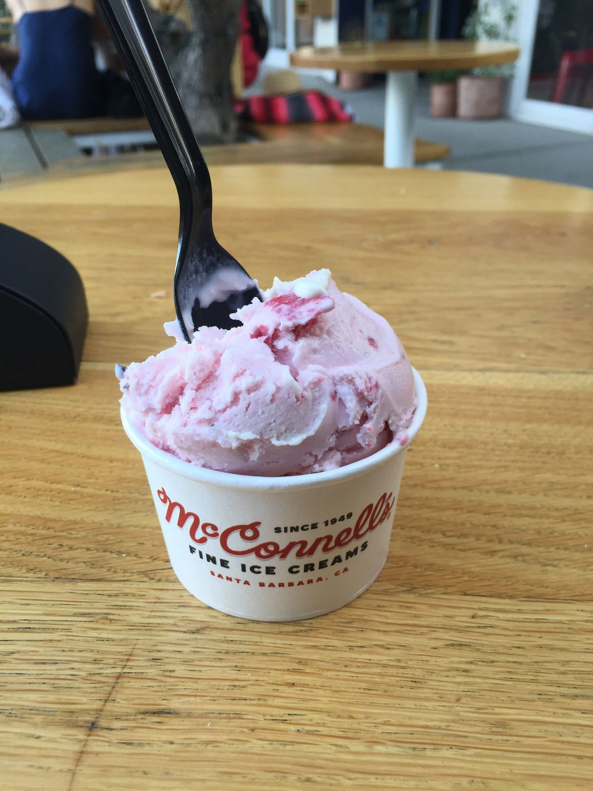
Monday April 1, 2019. Creamistry. Torrance, Los Angeles. The latest ice cream craze sweeping the nation, Creamistry makes each ice cream from scratch using fresh ingredients and liquid nitrogen. You're able to customize is extensively, from the dairy or non-dairy base to the toppings and mix-ins. They have some signature creations for those that can't make up their mind. I got their signature premium base with cookies and cream mix-in and fresh strawberries on top. It takes about five minutes for a "Creamologist" to make an ice cream (they had about five machines running at once) and the selections are priced a bit higher than the other already expensive ice cream shops I tend to visit. It was quite good—I'd even say above average. To some extent, it felt a bit gimmicky, but the custom, made on-the-spot ice cream turned out to be surprisingly good.
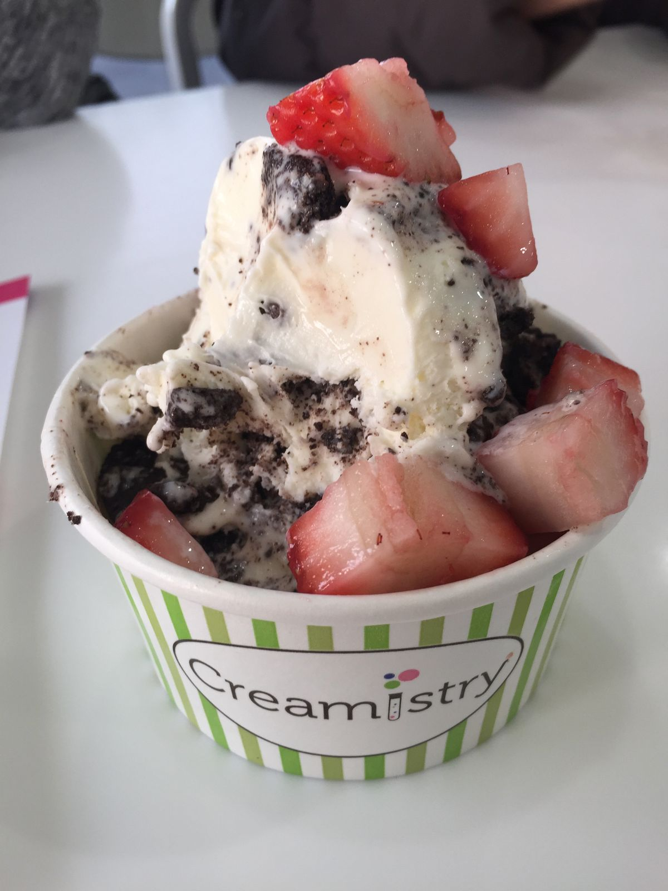
Tuesday, April 2, 2019. Grom. Malibu, California. On my way from Los Angeles to Solvang, I cruised through Malibu just before sunset, enjoying the breathtaking scenery of the pacific coast highway. I stopped by Grom as I entered Malibu for a stretch of the legs and a delicious stracciatella gelato in a cone.
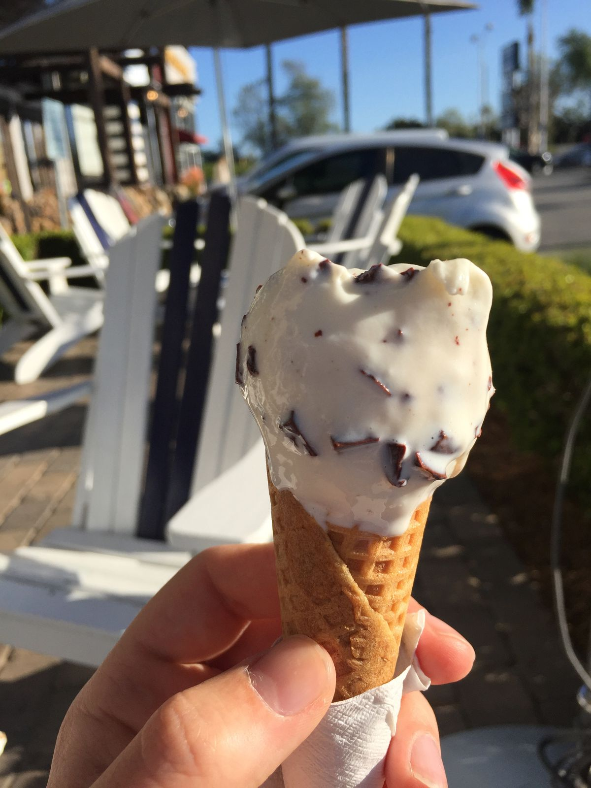
I missed April 3. I started my day at a yoga class in Solvang and ended up at a cabin in the forest in Big Sur. It was a long day of driving.
Thursday April 4, 2019. Nepenthe. Big Sur. The most recommended place of any kind for my travels along the west coast, Nepenthe is a seventy year old upscale restaurant with a great view overlooking the ocean in Big Sur. As I mentioned in a previous post, I shared a cake and ice cream with the guy sitting next to me at the bar, since it was too big for either of us and his wife was on a diet.
Friday April 5, 2019. Revival Ice Cream. Monterey, California. While renting an e-bike at Big Sur Adventures, the clerk highly recommended I go to Revival for some premium ice cream. I got a "Bee's Knees" ice cream sandwich. Their signature flavor combines beeswax and bee pollen with handcrafted organic custard and honeycomb candy. To my surprise, the chocolate cookie was gluten-free and I still loved it.
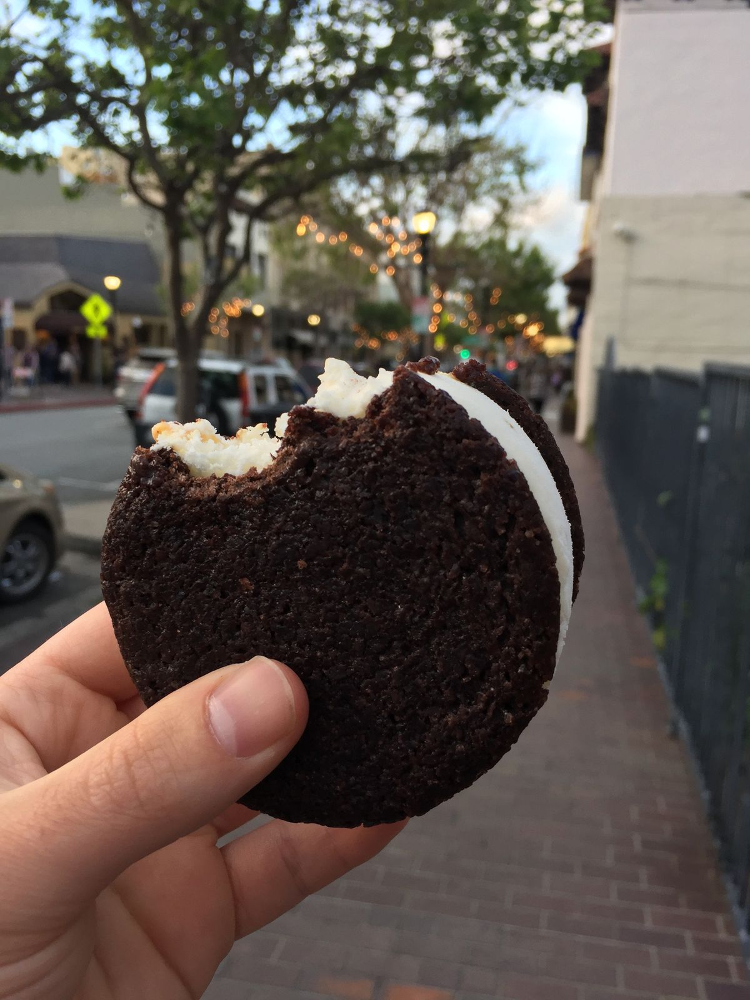
Saturday April 6, 2019. The Penny Ice Creamery. Downtown Santa Cruz. A friend recommended that I stop here when passing through Santa Cruz. I had a similar problem as earlier in San Diego when I only had my sunglasses. I ordered a scoop of something bee-themed in a cone with chocolate cookie crumble.
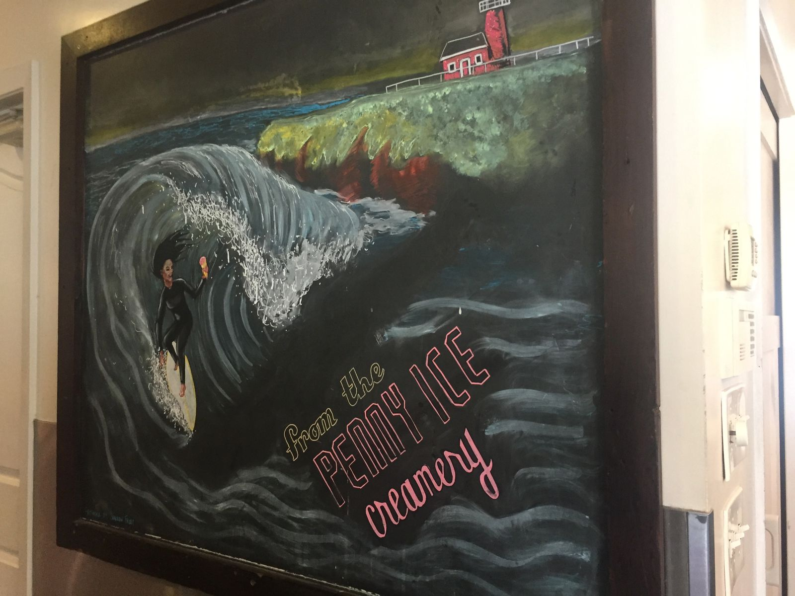
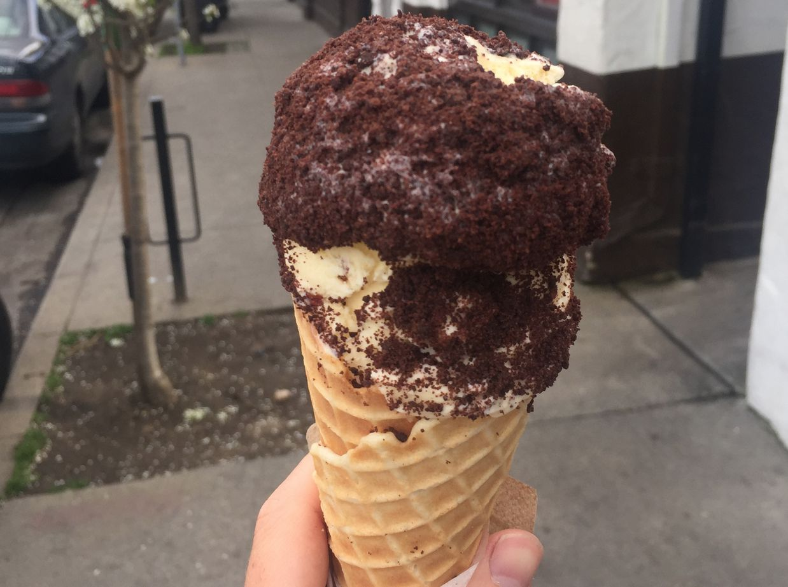
Sunday April 7, 2019. Scoop Microcreamery. Palo Alto. Forsaking a delicious ice cream sandwich from CREAM (my ice cream of choice last time I was in Palo Alto) instead I went to Scoop to try something now. I got a scoop of brown sugar banana in a cone and ate it too quickly to determine how good it was.
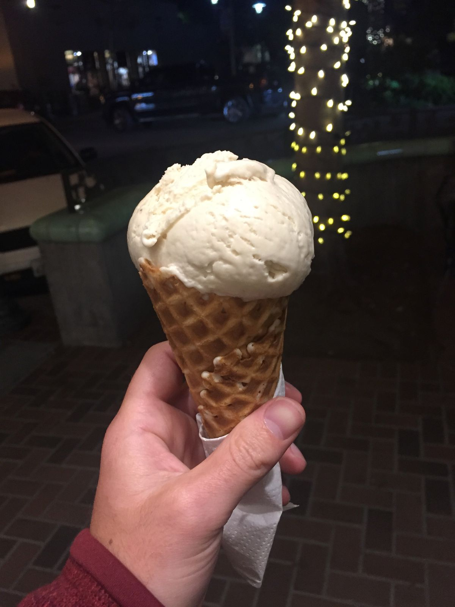
Monday April 8, 2019. I missed this day. Fuck.
Tuesday April 9, 2019. Curbside Creamery. Temescal, Oakland. I got a scoop of bourbon whiskey vanilla, though you couldn't tell from the photo below. It was excellent. Above average.
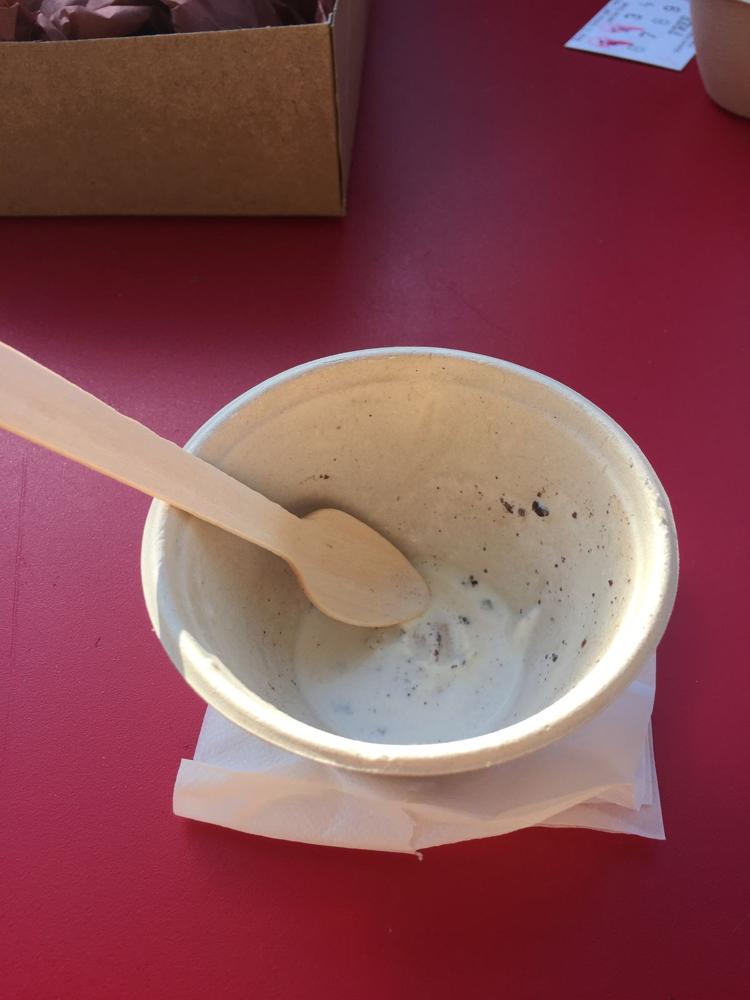
Wednesday April 10, 2019. Captain Davey's Coffee and Ice Cream. Bodega Bay, California. I got a scoop of chocolate chip and chocolate in a cup. Between Oakland and Fort Bragg there were few ice cream places with four start or more on Yelp. Captain Davey's in Bodega Bay was one of them. I suspect there's some ratings inflation in this ice cream dessert, since this was the worst ice cream of my trip. The ice cream itself was decent, but ice had formed throughout the entire scoop. No good.
Thursday April 11, 2019. Cowlick's Ice Cream. Fort Bragg, California. Thoroughly in the pacific northwest, the weather started to turn cold, windy, and cloudy at this point. By cold, I mean mid-fifties to low-sixties. To counter this declining weather pleasantness, Cowlick's Ice Cream was among the best ice creams of my trip. I got a scoop of chocolate and chocolate chip with chocolate sprinkles in a homemade waffle cone. It was my lunch.

Friday April 12, 2019. Sizzler. Grant's Pass, Oregon. No, Sizzler is not an ice cream shop. It is a family restaurant that was packed at 5pm on a Friday. I was the youngest person there by a few decades. The restaurant was like an Arby's and an UNO salad bar had a baby. You order your food and pay at a registry before you find a seat and there is also a buffet with a salad bar, soups, tacos, and soft serve. I got soft serve vanilla on a brownie. Honestly, it wasn't bad and I can't complain.
Saturday April 13, 2019. BJ's Old Fashioned Ice Cream. Florence, Oregon. On my way from Grant's Pass to Yachats, I encountered another ice cream dessert. BJ's is an old school ice cream parlor, sporting 58 flavors and plenty of candies. The ice cream was pretty good and the servings were large. I don't remember what I got.
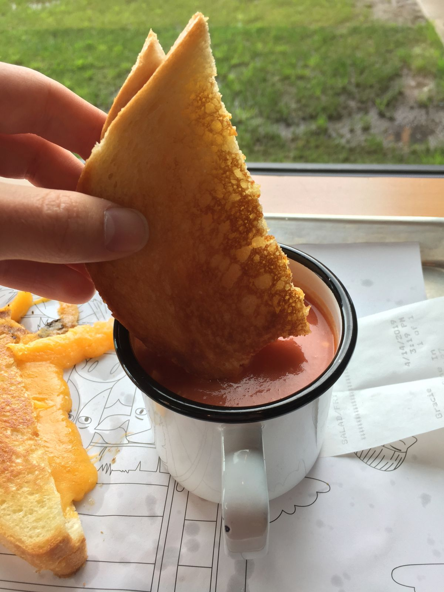
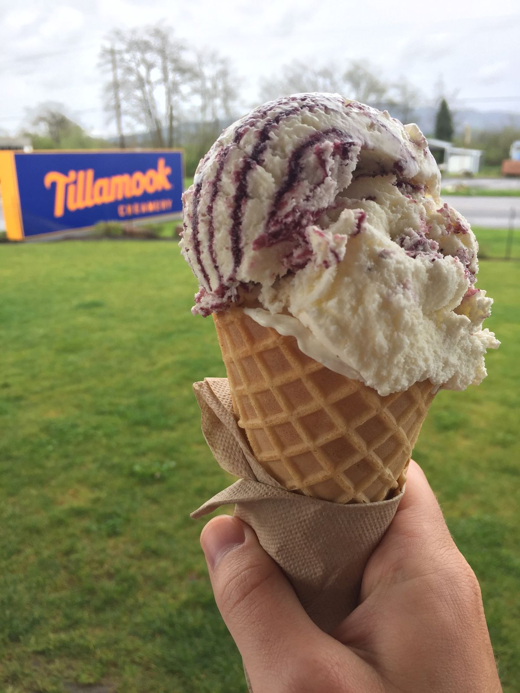
Sunday April 14, 2019. Tillamook Creamery. Tillamook, Oregon. On my way to Portland, I stopped by Tillamook Creamery for a tour and lunch. Tillamook is a large dairy processor in the region that makes ice cream, yogurt, and primarily cheese. It's found in grocery stores and is not generally considered a premium brand—though certainly not a sub-par brand either. Upon my visit, I was struck by the blandness of the cheddars. I was expecting something like Grafton Village Cheese Company in Vermont, which I visited last winter and was supremely impressed with their samplings. Tillamook, however, is a much larger facility, as demonstrated by the massive crowds visiting on that Sunday. After getting a grilled cheese and tomato soup (the cheeses cooking into the meal were significantly better than the samples), I got a scoop of Huckleberry Swirl in a cone. Though I have often found that fruit flavored ice creams are harder to get as smooth, the delightful flavor overcame any consistency issues.
Monday April 15, 2019. Salt and Straw. Portland, Oregon. A Portland classic, Salt and Straw blends unique and unexpected flavors to delicious results. When I was there in the fall, they had a salted caramel turkey ice cream for Thanksgiving, as well as a roasted peach and sage cornbread flavor. This time around, I tried their spring flower flavors of rhubarb crumble with toasted anise and wildflower honey with ricotta walnut lace cookies in a waffle cone. It was amazing, despite feeling disgusting stuffed after four slices of pizza.
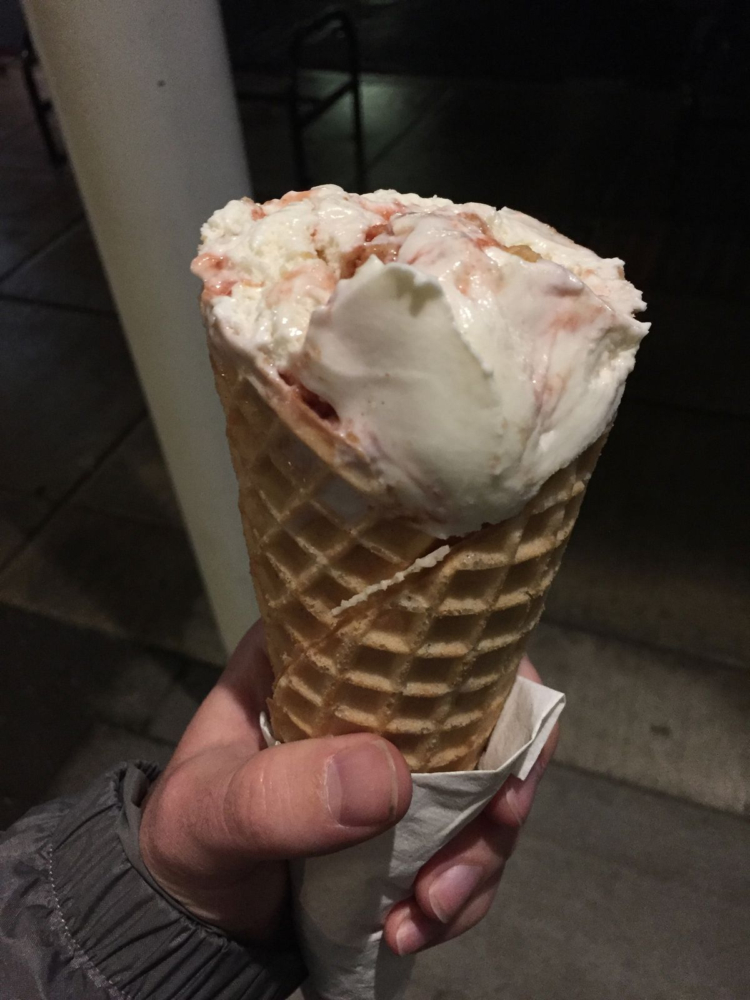
Tuesday April 16, 2019. What's the Scoop? Portland, Oregon. I wanted to go here during my last visit to Portland after reading a Yelp review that said it was better than Salt and Straw. Finally getting here, I ordered a scoop of lavender honey in a cup. It was not better than Salt and Straw but it was extremely flavorful. The ice cream itself was not as smooth as I typically like (it was a bit airy), but the flavor was extremely powerful which balanced it out.
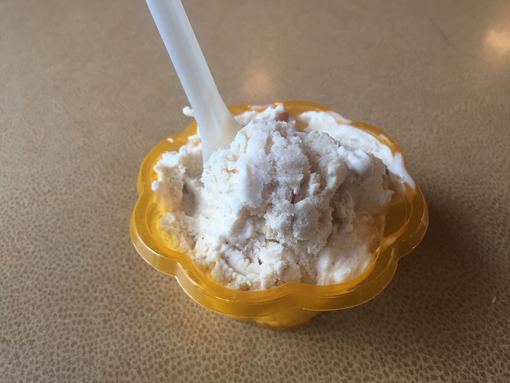
Wednesday April 17, 2019. I missed this day.
Thursday April 18, 2019. Molly Moon's Homemade Ice Cream. Capitol Hill, Seattle. Again I got a scoop of honey lavender, but I also got a scoop of melted chocolate in a homemade waffle cone. It was among the better ice creams.
Friday April 19, 2019. Nana's Green Tea. A chain from Japan specializing in matcha delights, Nana's produced a delicious matcha vanilla swirl soft serve in a waffle cone. Unless you're McDonald's, it's pretty hard to mess up soft serve, so it's a bit hard for me to judge here. I thought it was very good and the serving was rather large.
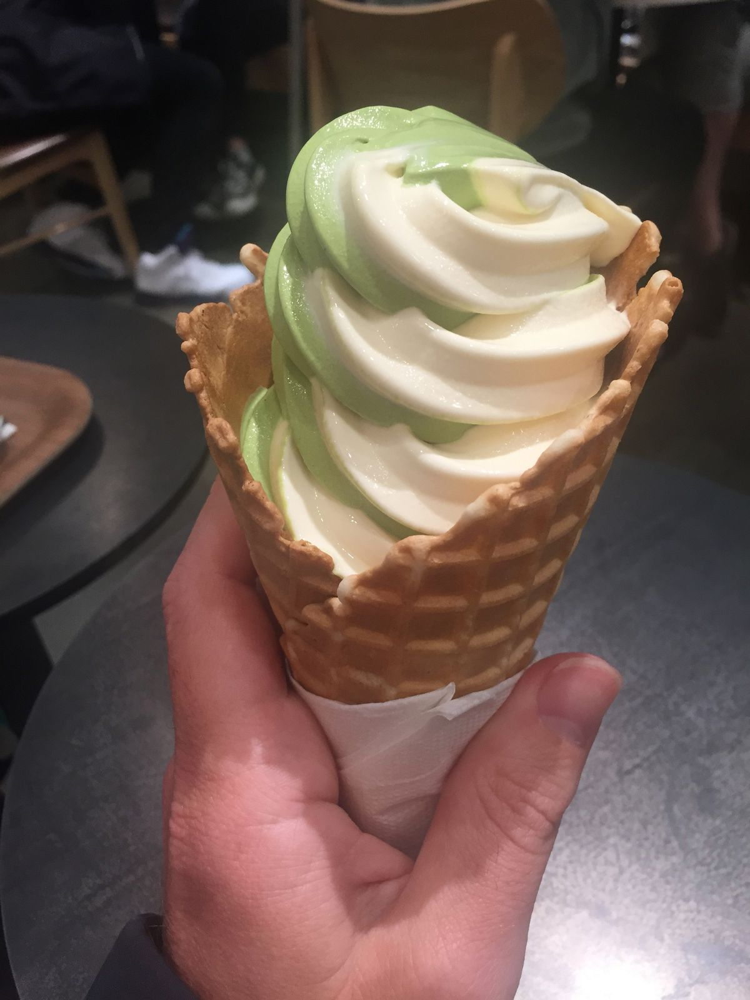
Saturday April 20, 2019. Fainting Goat Gelato. Wallingford, Seattle. Fainting Goat was terrific. The gelato was creamy and rich. I got a scoop of Sicilian Pistachio in a cone. I think I got another flavor as well, but I don't remember which one it was.
Sunday April 21, 2019. Frankie and Jo's. This place is a vegan ice cream shop and I was very impressed. I got a scoop of their "California Cabin" flavor in a homemade waffle cone. Despite the cone being gluten free, it was very flavorful with a hint of cinnamon and maple syrup. I also tasted the "Tend the Terra" flavor, their first hemp milk-based ice cream.
Monday April 22, 2019. Sweet Alchemy Ice Creamery. University District, Seattle. To end my trip, I got two scoops of chai tea and Aztec chocolate in a cup. It was a great way to end.
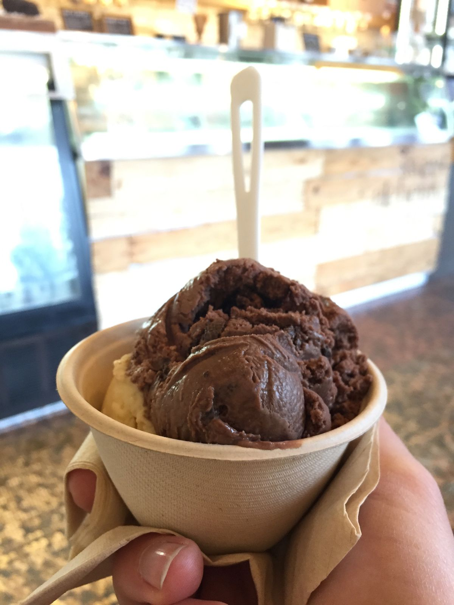